La présentation peut être suivie sur...
Localisation de LoRa par DToA
Présentation thèse de Bachelor
par Sebastien Chassot
Ingénierie des technologies de l'information avec orientation en Informatique matérielle
HESSO - hepia
septembre 2017
Professeur responsable :
Introduction
Principes de localisation
Objectifs du projet
Déroulement de ce projet
Résultats et perspectives
Lien RF pour applications IoT
Les objets sortent de veille pour uploader leurs data
Une modulation pouvant porter sur plusieurs Km
Nécessite une infrastructure (gateway) pour router les data vers les applications
En résumé, lien faible consommation couvrant de grandes distances
Les LoRaMotes uploadent leurs data puis se mettent en veille
Les LoRaMotes uploadent leurs data puis se mettent en veille
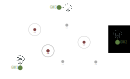
Les LoRaMotes uploadent leurs data puis se mettent en veille
L'architecture se compose généralement de balises et de mobiles
Est-ce que ce sont les mobiles qui doivent se localiser ?
...ou le besoin de localisation vient de l'extérieur ?
Les balises et les mobiles doivent être synchronisés
il faut connaître le(s) temps de départ(s) et ceux d'arrivées
seuls les temps d'arrivées sont nécessaires

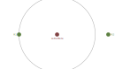
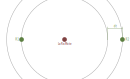
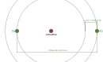
Les ondes RF se propagent à la vitesse de la lumière
Une onde RF parcours 1 mètre en ~4 ns
Une fréquence de 50MHz ⇔ une période de 20 ns (~5 mètres)
Le temps en vol d'un paquet LoRa peut être de plus d'une seconde
Qu'est-ce que le Software Defined Radio (SDR) ?

Un système d'acquisition de signal RF
Travaille sur une plage de fréquences étendues (de 70MHz à 6GHz)
résolution de 50 Msamples/s
Outils de prototypage
Application RF implémentée au niveau logiciel
Application RF implémentée au niveau logiciel
Application RF implémentée au niveau logiciel
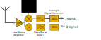
Application RF implémentée au niveau logiciel
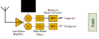
Application RF implémentée au niveau logiciel
Application RF implémentée au niveau logiciel
ASIC dédié à une application RF spécifique
L'architecture du système
L'architecture du système


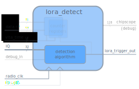
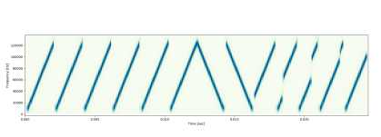

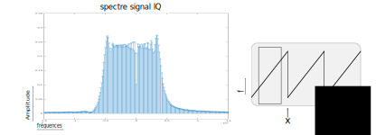
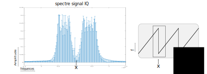
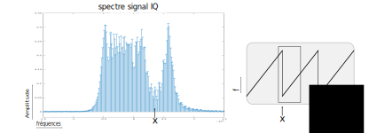
Gestion du temps et synchronisation
Un compteur plus un registre
Gestion du temps et synchronisation
Un compteur plus un registre
Gestion du temps et synchronisation
Un compteur plus un registre
Gestion du temps et synchronisation
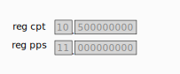
À la 1/2 seconde le registre est incrémenté
Gestion du temps et synchronisation
Le compteur a une dérive
Gestion du temps et synchronisation
Si un signal PPS arrive, le compteur est écrasé
Methode de mesures de la précision temporelle

Methode de mesures de la précision temporelle

Varie de 0 ns à 250 ns (0-75m)
Les compteurs nécessitent une resynchronisation régulière
Les compteurs se resynchronisent quand ils recouvrent le signal PPS
Le jitter du GPS s'ajoute à la dérive du compteur
Le jitter du GPS s'ajoute à la dérive du compteur
Erreurs inférieures à ± 40 ns (~10m)
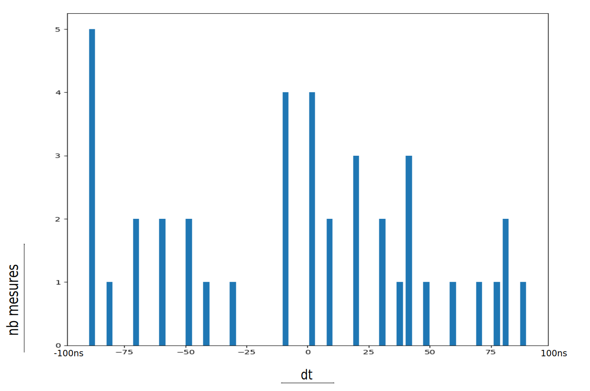
Une erreur de 25m sur plusieurs Km est un bon résultat
La synchronisation des récepteurs est satisfaisante (±40 ns ⇔ ±10m)
L'utilisation de Oven Controlled Oscillator (OCXO) et de GPS de bonne qualité améliorerait encore la précision
Il reste à trouver un algoritme plus robuste
L'architecture transceiver, FPGA et CPU (ethernet) est validée
L'extension à plus de récepteurs permettrait une géolocalisation
Le payload des messages permettrait de mieux associer les paquets à comparer
Questions ?
liens
https://media.ccc.de/v/33c3-7945-decoding_the_lora_phy (vidéo)
https://github.com/selinux/LoRa_DToA_host (code des scripts et utilitaires)
https://github.com/selinux/uhd (code du projet)
https://github.com/selinux/fpga (code de la partie FPGA)
http://files.ettus.com/manual/index.html (doc USRP B200)